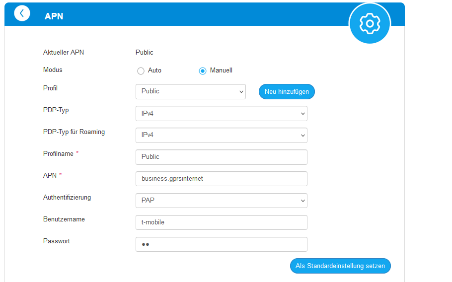
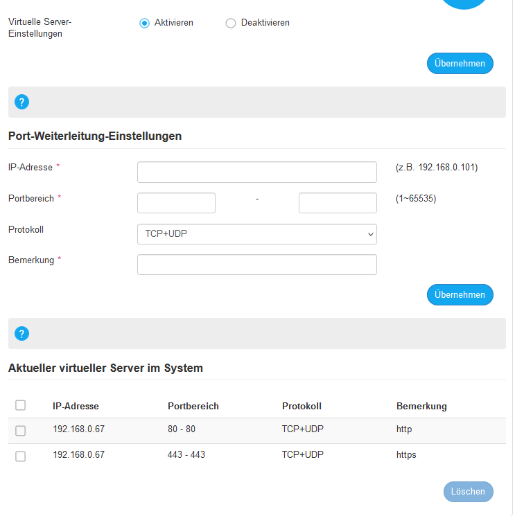

Guten Abend,
aktuell habe ich Schwierigkeiten mit der Portweiterleitung meines ZTE MC801A Routers. Mein Ziel ist es, von außen auf meine internen Anwendungen zuzugreifen, und dazu nutze ich einen Reverse-Proxy. Ich habe bereits einen DynDNS eingerichtet, der auf meine öffentliche IP-Adresse verweist, die ich durch das Umstellen des APN erhalten habe. Dieser funktioniert auch soweit und ich kann extern auf meinen Router zugreifen.
Anschließend habe ich das Port-Forwarding für die Ports 443 und 80 aktiviert und auf meinen Reverse Proxy weitergeleitet. Leider ohne Erfolg, da mir nur die Konfigurationsseite des Routers angezeigt wird. Laut
https://www.yougetsignal.com/tools/open-ports/
sind die Ports allerdings beide auf offen gestellt.
Vielen Dank schon im vorraus!
Bg
Grupa
APN:

Port Forwarding:

Am 3.1.2024 um 21:57 schrieb GruPa:Vielen Dank schon im vorraus!
Hey, eine Recherche im Internet brachte folgende Infos hervor:
Es gibt ein paar mögliche Ursachen für das Problem mit der Portweiterleitung Ihres ZTE MC801A Routers.
- Die Portweiterleitung ist nicht richtig konfiguriert. Stellen Sie sicher, dass Sie die Ports 443 und 80 richtig auf Ihren Reverse Proxy - weitergeleitet haben. Die interne IP-Adresse des Reverse Proxies sollte die IP-Adresse des internen Servers sein, auf den Sie von außen zugreifen möchten.
- Der Reverse Proxy ist nicht richtig konfiguriert. Stellen Sie sicher, dass der Reverse Proxy die Anfragen an den internen Server weiterleitet.
- Die Firewall Ihres Routers blockiert die Ports. Stellen Sie sicher, dass die Firewall Ihres Routers die Ports 443 und 80 nicht blockiert.
Hier sind einige Schritte, die Sie zur Fehlerbehebung ausführen können:
- Überprüfen Sie die Konfiguration der Portweiterleitung. Stellen Sie sicher, dass die Ports 443 und 80 richtig auf Ihren Reverse Proxy weitergeleitet sind. Die interne IP-Adresse des Reverse Proxies sollte die IP-Adresse des internen Servers sein, auf den Sie von außen zugreifen möchten.
- Überprüfen Sie die Konfiguration des Reverse Proxies. Stellen Sie sicher, dass der Reverse Proxy die Anfragen an den internen Server weiterleitet.
- Überprüfen Sie die Firewall Ihres Routers. Stellen Sie sicher, dass die Firewall Ihres Routers die Ports 443 und 80 nicht blockiert.
Wenn Sie alle diese Schritte ausgeführt haben und das Problem immer noch besteht, können Sie sich an den Support von Magenta wenden.
Hier sind einige weitere Tipps zur Fehlerbehebung:
- Verwenden Sie einen anderen Browser, um die Portweiterleitung zu testen.
- Versuchen Sie, von einem anderen Gerät aus auf die Portweiterleitung zuzugreifen.
- Starten Sie Ihren Router neu.
Ich hoffe, diese Informationen helfen dir, das Problem zu lösen. LG JD.